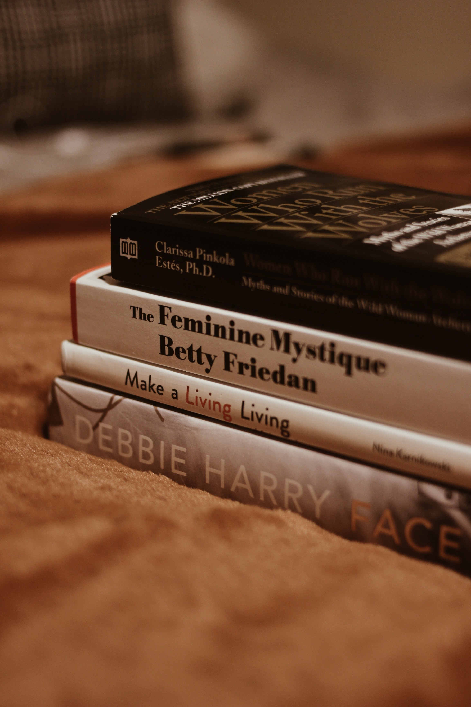

Moonlight Sculptor was not the first fatasy novel i read, but it was the first novel that I thought of as a worldview.
A few words implied the worldview, but what if I had played this game other than that? it was enough to imagine, and i was able to unfold my imagination, and every day was so happy, and i was lookin gforward to the next book, so i read it all night.
This book is a bit munchkin, but the setting that goes into the worldview was a little interesting. This is not what the ideal world wants, but different dimensions and positions overlap with reality, but different dimensions? This is a novel that I like in that there is an ideal world that can be explained in this way.